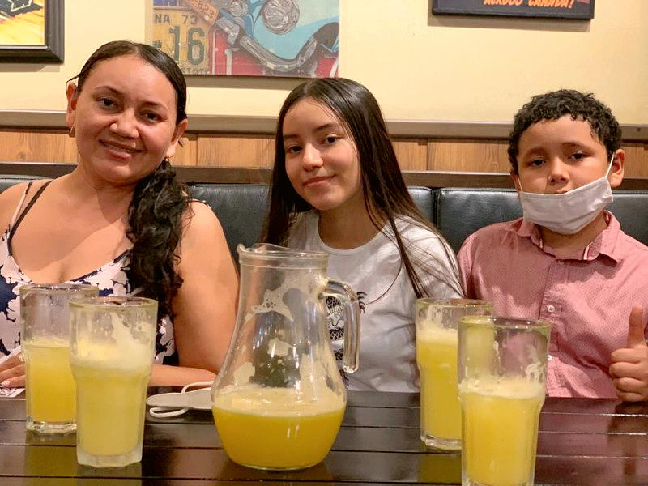

Mi nombre es Danna Briggith Moreno Girón, tengo 16 años, cumplo 17 este 25 de diciembre y actualmente curso grado 11 en la ciudad de Yopal Casanare.
Mis colores favoritos son el blanco y el azul clarito, me encanta cantar y pintar, me considero una persona muy creativa.
Tengo 1 hermanito y vivo con mi mamá y padrastro, me gusta mucho el diseño y me gustaría estudiar diseño
digital o mercadeo y publicidad. Actualmente manejo las redes sociales de una cafetería y tengo mi propio emprendimiento.
Mi vídeo Favorito
Me encantan todos los vídeos donde se pueden observar los atarderes y el mar,
mi sueño es visitarlo de nuevo y encontrarme con un atardecer bellísimo mientras las olas
del mar salpican la arena.
Vídeo propio
Canciones favoritas
Canción favorita 1
Holy de Justin Bieber ft. Chance the Rapper
Canción favorita 2
Otras se pierden de Morat
Estudios
Estudios Realizados
Estudios
Grado
Año de terminación
Institución
Primaria
5°
2015
I.E Centro Social
Tecnica
9°
2019
I.E Centro Social
Tecnológica
10°
2020
I.E Centro Social
Profesional
Sin empezar
N.A
N.A
Informació propia
>>>>>
Momentos Felices :)

Esta foto es del día siguiente a mi cumpleaños número 16,
de por sí amo los cumpleaños pero ese día fuímos a comer
unas deliciosas hamburguesas con mi mamá, mi hermanito Luis y mi novio
que es quien está tomando la foto. Me gustó mucho poder compartir un
almuerzo en familia pues por el covid y demás nunca salimos juntos, es un lindo momento
que espero se repita pronto.
Es asombroso!!!!!